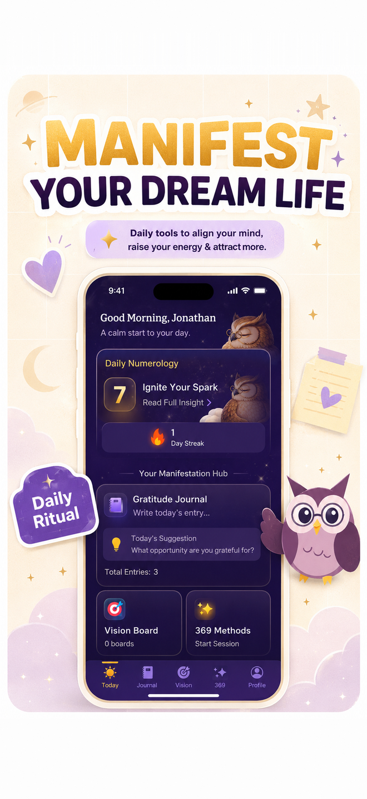
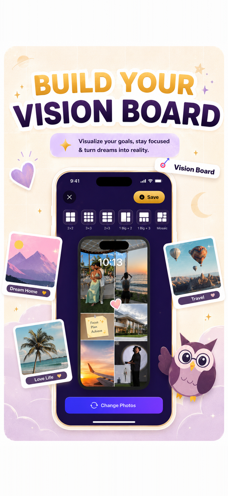
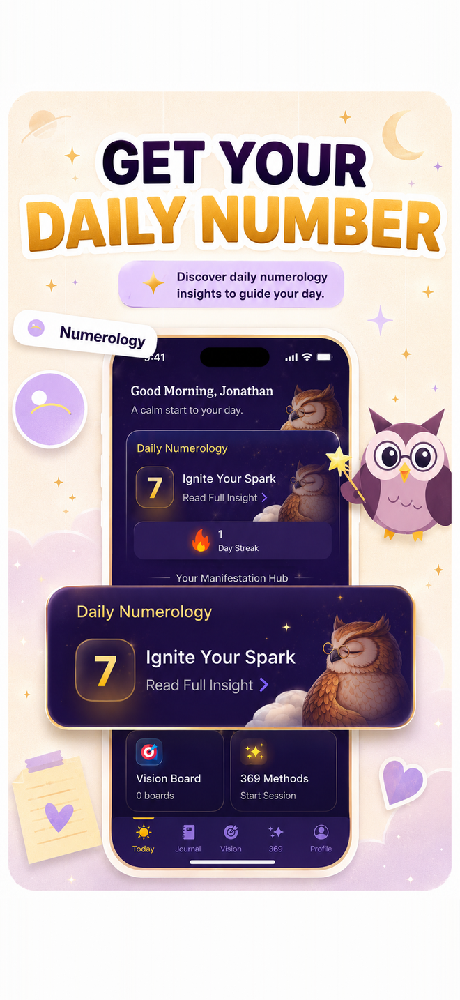
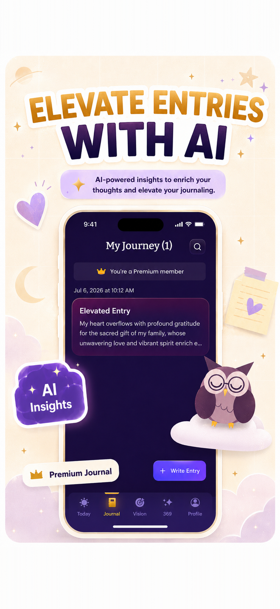

Manifest: Vision Board & 369 — for iPhone
The manifestation app with a vision board & the 369 method
Write your intention 3-6-9 times a day, keep your dreams visible on a beautiful vision board, and start each morning with your personal numerology reading — one quiet daily ritual, guided by a wise little owl.

Begin your ritual today
Free to download · 3-day free trial · cancel anytime
Inside the app
One app for your whole manifestation practice



How it works
Manifest in four small daily moves
No pressure, no comparison — one quiet ritual, a few minutes at a time.
Set your intention
Choose one specific desire and phrase it as an affirmation — as if it has already happened.
Write it 3-6-9 times daily
3× in the morning, 6× in the afternoon, 9× at night. Guided time windows and reminders keep you on rhythm.
Visualize with your board
Build a vision board from your photos, then set it as your wallpaper so your goals stay in view.
Track your energy
Each morning, read your personal day number and AI numerology insight — then keep your streak alive.
Free guides
Learn manifestation, step by step
Practical, no-fluff guides to the 369 method, vision boards, numerology, and gratitude journaling.
Best Manifestation Apps in 2026
Eight iPhone apps honestly compared — real ratings, prices, and best-for verdicts.
Read the guide →What Is the 369 Manifestation Method?
Tesla's favorite numbers, the viral ritual, and why 3-6-9 works.
Read the guide →How to Do the 369 Method
A step-by-step daily schedule — morning, afternoon, and night.
Read the guide →369 Method Examples: What to Write
25+ copy-ready affirmations for love, money, career, and health.
Read the guide →The 33-Day Manifestation Challenge
How long the 369 method takes, and what actually happens by day 33.
Read the guide →How to Make a Vision Board on Your Phone
Build a digital vision board on iPhone and set it as your wallpaper.
Read the guide →What Is My Personal Day Number?
Calculate today's numerology number from your birth date — with meanings 1–9.
Read the guide →Angel Numbers Meaning: 111 to 999
What 111, 222, 333, and 444 are trying to tell you.
Read the guide →Gratitude Journal Prompts for Manifestation
30 prompts that shift you from lack to abundance.
Read the guide →How to Start a Manifestation Journal
Scripting, affirmations, and gratitude — one simple journaling system.
Read the guide →How to Manifest Something
A beginner's guide to manifesting — from first intention to daily practice.
Read the guide →Scripting for Manifestation
The 4-step formula for writing your future, with 3 ready examples.
Read the guide →Vision Board Ideas: 9 Categories
Stuck on what to put on your board? 9 categories with concrete ideas for each.
Read the guide →FAQ
Questions people ask about manifesting
What is the 369 manifestation method?
It's a daily writing ritual inspired by Nikola Tesla's fascination with the numbers 3, 6, and 9: you write one affirmation 3 times in the morning, 6 times in the afternoon, and 9 times at night — usually for 33 days — to keep your intention front of mind. Learn more →
How do I write 369 method affirmations?
Pick one specific desire, phrase it in the present tense as if it already happened, and charge it with gratitude — for example, "I am so grateful for my new job that I love." Keep the same sentence for the whole cycle. Learn more →
How long should you do the 369 method?
The classic cycle is 33 days — three writing sessions a day, 3 + 3 = 33 days echoing the 3-6-9 pattern. Consistency is the whole game, so streaks and reminders help a lot. Learn more →
How do I make a vision board on iPhone?
Gather photos that represent your goals, choose a grid layout like 2×2 or 3×3, arrange your images, and save the board as your wallpaper. The Manifest app includes ready-made vision board templates for exactly this. Learn more →
What is a personal day number?
A numerology number from 1 to 9, calculated from your birth date plus today's date, describing the energy of your day — 1 for beginnings, 5 for change, 9 for completion. Manifest calculates yours automatically every morning. Learn more →
What do angel numbers 111, 222, and 333 mean?
They're repeating sequences believed to carry guidance: 111 is new beginnings and manifestation, 222 is balance and trust, 333 is creativity and growth, 444 is stability and protection. Learn more →
Is the Manifest app free?
Manifest is free to download and starts with a 3-day free trial so you can try everything — the 369 ritual, vision boards, AI journal, and numerology. After the trial it's $24.99/year or $3.99/week, and you can cancel anytime. Start free →
What should I write in a gratitude journal for manifestation?
Specific "I am grateful for…" entries, future-self scripting, and thank-you letters to the universe written as if your desire already arrived. Manifest's AI Elevate turns even a rough note into an affirming reflection. Learn more →
How do I start manifesting as a beginner?
Choose one clear desire, write it daily as a present-tense affirmation, visualize it with a vision board, and pair belief with action. A simple structure like the 369 method makes it easy to stay consistent. Learn more →
Does Manifest work in my language?
Yes — the app supports 20 languages, including full right-to-left layouts for Hebrew and Arabic, and is live in 25 App Store regions.
Your dream life starts with
one small ritual
Three lines in the morning. Six in the afternoon. Nine under the stars. In 33 days, see what changes.